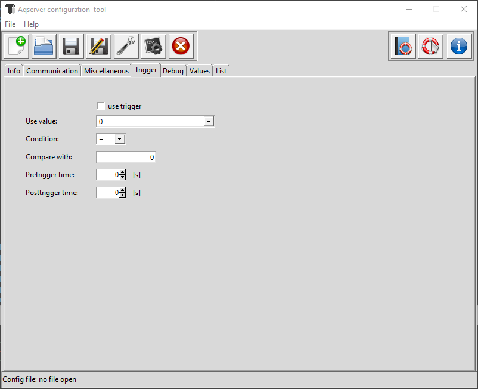

Trigger tab¶
Trigger (Wikipedia):¶
In physics, a trigger is a system that controls the data collection of an experiment. Often it is not possible or not important to continuously record all measured values in experiments. In this case only a part of the measured values is read out and based on this, it is decided when the remaining data should be read out.
In our case we use the trigger to start a new datafile.
- trigger checkbox:
switch trigger function on or off
- trigger signal:
choose the trigger from available signals with the combobox

combobox with trigger signals
- trigger condition:
choose the comparison operator for the trigger
- trigger value:
value the trigger signal is compared with
- pre-trigger:
time before the trigger, where signals will go into new file
- post-trigger:
time after trigger, where signals will go into old file
Note
Pre- and post-trigger are used to get an overlap between old and new datafile